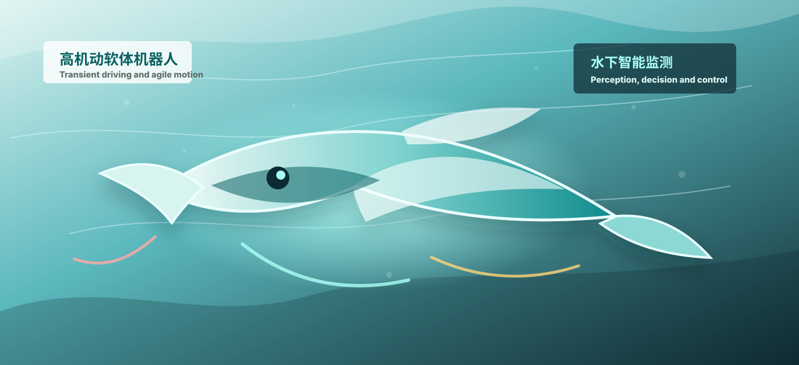

个人简介
我是浙江大学海洋学院海洋技术与工程方向博士研究生，研究兴趣集中在高机动软体机器人、 水下软体机器人、流体力学建模、海洋工程结构智能监测以及机器人端侧感知-决策-控制闭环。 我的工作希望让机器人能够在强扰动、高风险、非结构化的海洋环境中快速响应、可靠感知并自主行动。
目前，我围绕化学放能瞬变速驱动方法开展机器人本体、驱动器、CFD 水动力学分析、 YOLO 系列水下识别模型与 DQN-MPC 决策控制框架研究，并推动相关系统在海上风电场、 跨海大桥、港口码头等工程场景中的测试和应用。
新闻动态
以下条目根据公开网页中“马洪宽”相关信息整理；每条均提供可点击的 HTTPS 检索入口，便于跳转核验和后续替换为官方新闻页。
机器人演示

瞬变速驱动水下机器人感知-决策闭环
演示模块概括了我的机器人研究主线：高机动软体驱动器提供瞬时高力输出， 水下视觉模型识别结构损伤，端侧 DQN-MPC 决策控制框架完成自主响应。
- 响应速度
- < 0.1 s
- 驱动能力
- 70 倍自重输出力
- 功率密度
- 3730 W/kg
代表论文
Feline-Inspired Robot Enabled by Combustion-Driven Actuators for Agile Motion and High-Payload Obstacle Traversal
马洪宽 等
期刊信息：中科院 1 区 TOP，JCR 1 区，影响因子 14.1。封面论文，并由出版社全球视频直播推介。
提出内嵌骨架的丙烷-氧气瞬变速驱动软体致动器，实现 3-5 ms 响应、70 倍自重高输出力与 ≤5% 控制精度。
Hydrodynamics of High-Speed Leaping Underwater Soft Robots Empowered by Transient Driving Method
马洪宽 等
期刊信息：机器人领域旗舰期刊，JCR 1 区，影响因子 7.5。
建立耦合空化模型、VOF 两相流与动网格的 CFD 模型，揭示高速跃出水下软体机器人的跨介质水动力学规律。
YOLOX-DG Robotic Detection Systems for Large-Scale Underwater Concrete Structures
共同第一作者 等
期刊信息：综合性期刊，JCR 1 区。
构建仿蝠鲼水下机器人与 YOLOX-DG 损伤检测模型，并在东海枸杞岛渔港完成真实海域测试。
科研项目
极端海洋动力条件下典型承灾体风险动态监测与预警技术
国家重点研发计划项目，机器人研发负责人。负责高机动机器人、瞬变速连续驱动、YOLO-PK 视觉识别与 DQN-MPC 决策控制研发。
风暴潮过程中澳门海域地峡道增水机制与灾害预警报技术
国家重点研发计划项目，机器人研发骨干。负责瞬变速驱动水下机器人结构设计、运动方案设计与水下运动数值模型。
海洋工程动力响应与结构安全智能监测及感知关键技术
浙江省重点研发计划项目，图像识别技术研发骨干。负责 YOLO-UNDERWATER 图像识别模型与水下结构损伤数据库。
专利与荣誉
已授权国家发明专利 5 件，在申国家发明专利 3 件。代表性成果包括仿猫骨骼跳跃救援监测机器人、 仿火体虫连续爆震机器人及控制方法、桥梁风致振动定向监测预警系统等。
在校期间获 40 余项竞赛奖励与荣誉，包括第二届金砖国家发明展最高荣誉特许金奖、第四十九届日内瓦国际发明展银奖、 中国研究生机器人创新大赛二等奖、中国机器人学术年会最佳海报奖、中国国家奖学金（博士生）和浙江大学子辰先进技术奖学金。
简历
完整学术简历可在此下载。公开网页默认不展示手机号、出生年月和详细住址，以避免个人隐私过度暴露。
公开网址
本地文件路径不是公开网址。若要获得 https:// 开头的网址，需要将整个网站文件夹部署到 GitHub Pages、
Netlify、Vercel 或学校服务器。部署完成后，网址会类似 https://你的用户名.github.io/仓库名/。